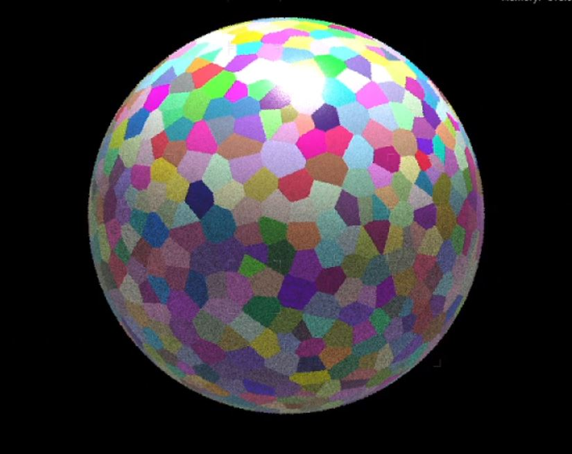
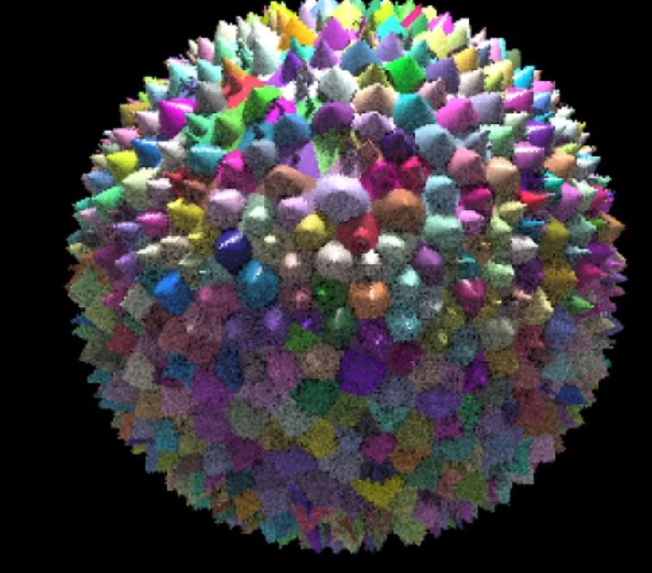
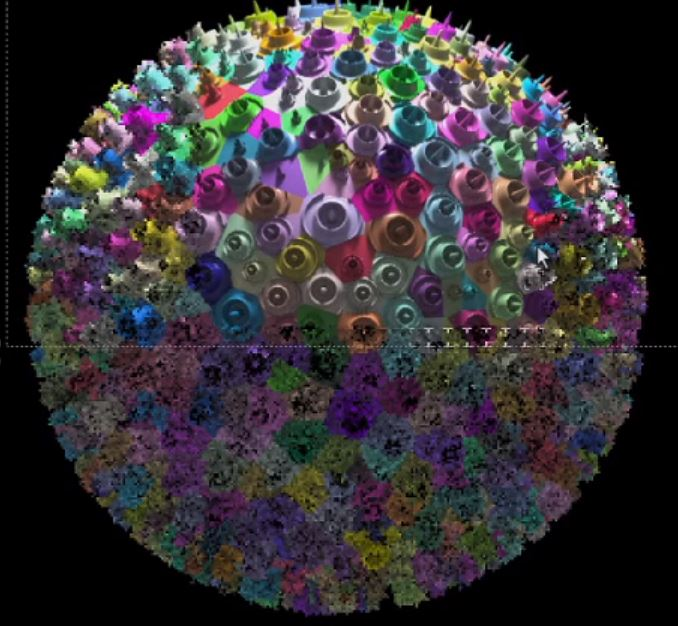
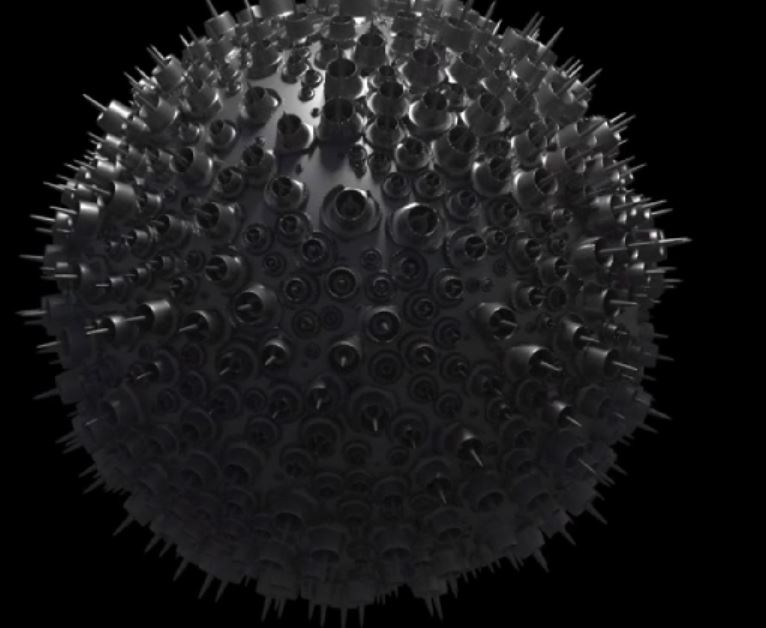

Procedural Abstact VFX
These are class projects from my CGMA Abstract Effects Class. The class is a well rounded lesson with fundamentals in copy stamping, noise effects, vex and point cloud lookup, creatinbg an abstract growth effect etc.
Point Cloud In Shaders and Particles
Project Specifications
The same point cloud system is written to file and is fed into the shader for a run time manipulation of
the displacement property. A simple displacement taken to the next level to great effect using the point cloud system.
Each Step is captured by stages. The first step was to use small spheres to cut up the bigger sphere in random shapes and placeswith pscale values.
Then the displacement and chramps are used to displace the sruface of the shader at rendertime.



